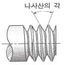
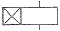
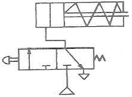
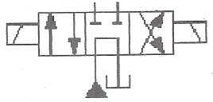

설비보전기능사 (2014-10-11 기출문제)
1과목: 기계보전 일반(대략구분)
1. 압축기를 압축하는 방식에 따라 원심식과 왕복식으로 분류할 때, 원심식 압축기와 비교한 왕복식 압축기의 특징으로 옳지 않은 것은?
- 소용량이다.
- 윤활이 어렵다
- 기초가 견고해야 한다.
- 고압 발생이 불가능하다.
(정답률: 82%)

2. 그림과 같은 미터나사에서 나사산의 각도는 얼마인가?

- 45˚
- 55˚
- 60˚
- 65˚
(정답률: 79%)
3. 롤러 베어링의 점검내용에 따른 처치방법으로 옳지 않은 것은?
- 베어링에서 이상음 발생 - 베어링을 교환한다.
- 2시간 운전 후 이상발열현상 - 분해점검을 한다.
- 이상 마모 및 동력전달 불량 - 윤활유를 보충한다.
- 베어링의 고정 볼트 풀림 - 토크 렌치를 이용하여 규정 토크로 조인다.
(정답률: 56%)
4. 코일 스프링의 도시 방법으로 옳은 것은?
- 그림 안에 기입하기 힘든 사항은 일괄하여 표제란에 기입한다.
- 코일 스프링을 도시할 때에는 원칙으로 무하중인 상태에서 그린다.
- 코일 스프링의 양 끝을 제외한 같은 모양 부분을 일부 생략하는 경우에는 생략된 부분을 한 개의 굵은 실선으로 나타낸다.
- 코일 스프링의 종류 및 모양만을 간략하게 도시하는 경우에는 스프링의 중심선을 가는 1점 쇄선 또는 가는 2섬 쇄선으로 표시한다.
(정답률: 65%)
5. 한쪽 방향으로는 회전하고 반대 방향으로는 회전이 불가능하도록 만든 장치 또는 기구는?
- 링크(link) 기구
- 래칫(rachet) 기구
- 블록 브레이크(brake) 장치
- 밴드 브레이크(brake) 장치
(정답률: 78%)
6. 다음 중 기어의 손상에서 이 면의 열화에 해당하는 손상의 원인으로 옳은 것은?
- 피로 파손
- 이면의 균열
- 소성 항복
- 과부하 절손
(정답률: 50%)
7. 보일러나 압력 용기 내부의 압력이 설정압 이상으로 상승할 때 초과 압력을 외부로 배출시키는 밸브는?
- 콕
- 안전 밸브
- 체크 밸브
- 글로브 밸브
(정답률: 79%)
8. 회전기기의 베어링에 윤활을 하는 목적으로 옳지 않은 것은?
- 마모를 방지하고 베어링 수명을 연장한다.
- 축을 지지하고 부품의 위치를 일정하게 유지한다.
- 외부로부터 먼지 또는 이물질의 침입을 방지한다.
- 동력손실을 작게 하고 마찰에 의한 발열을 제어한다.
(정답률: 73%)
9. 도면에서 2종류 이상의 선이 같은 장소에서 중복될 경우 최우선되는 종류의 선은?
- 외형선
- 숨은선
- 절단선
- 중심선
(정답률: 87%)
10. 보전 방식의 분류 중에서 설비의 주기적인 점검을 통해 고장, 정지 또는 유해한 성능저하를 초기단계에서 제거 또는 복구시키기 위한 방식은?
- 사후보전(Breakdown Maintenance)
- 보전예방(Maintenance Preventive)
- 개량보전(Corrective Maintenance)
- 예방보전(Preventive Maintenance)
(정답률: 78%)
11. 접촉 마모, 스코어링, 진행성 피칭, 스포오링을 일으킬 때, 이것의 주된 원인으로 보기에 가장 거리가 먼 것은?
- 기어의 제작 불량
- 기어의 조립 불량
- 기어의 청소 불량
- 기어의 윤활 불량
(정답률: 64%)
12. 기어 감속기 중 평형 축형 감속기가 아닌 것은?
- 웜 기어
- 스퍼 기어
- 헬리컬 기어
- 더블 헬리컬 기어
(정답률: 78%)
13. 다음 중 체결용 기계요소가 아닌 것은?
- 핀
- 코터
- 체인
- 볼트, 너트
(정답률: 81%)
14. 송풍기에서 일정 풍량 영역에서만 진동이 발생하는 원인으로 옳은 것은?
- 서징(surging)
- 축의 굽음(blending)
- 언밸런스(unbalance)
- 축 정렬 불량(misalignment)
(정답률: 63%)
15. 구름베어링을 사용한 감속기 운전 중 발생하는 진동 유발 원인으로 옳지 않은 것은?
- 이 접촉면이 불량한 경우
- 기어의 백래쉬가 작은 경우
- 감속기 브라켓이 약한 경우
- 베어링 내부에서 오일휠(oil whirl) 현상이 발생한 경우
(정답률: 52%)
16. 기어나 회전링을 이용하여 윤활유를 튀겨 날려서 베어링에 윤활유를 공급하는 방법으로 변속기 및 기어박스 등에 널리 사용되는 윤활유 급유방법은?
- 유욕법
- 적하 급유법
- 제트 급유법
- 비산 급유법
(정답률: 61%)
17. 윤활유의 점도에 해당하는 것으로 그리스의 굳은 정도를 나타내는 것은?
- 주도
- 황산회분
- 중화가
- 산화안정도
(정답률: 83%)
18. 전동기가 기동하지 않는 원인으로 가장 적절한 것은?
- 모터의 발열
- 코일의 단선
- 커플링의 마모
- 베어링 내의 이물질 혼입
(정답률: 79%)
19. 길이 방향으로 단면하여 도면에 표시하여도 관계없는 것은?
- 핸들의 암
- 구부러진 배관
- 베어링의 볼
- 조립 상태의 볼트
(정답률: 66%)
20. 선의 종류 중 대상물의 보이는 부분의 모양을 표시하는 것은?
- 1점 쇄선
- 가는 실선
- 굵은 파선
- 굵은 실선
(정답률: 73%)
2과목: 설비관리(대략구분)
21. 다음 중 원통 및 구멍의 내경 측정에 사용하는 측정기는?
- 블록 게이지
- 실린더 게이지
- 스트레이트 에지
- 옵티컬 플레이트
(정답률: 65%)
22. 물체의 앞에서 바라본 모양을 도면에 나타낸 것으로 그 물체의 가장 주된 면, 즉 기본이 되는 면의 투상도 명칭은?
- 정면도
- 평면도
- 우측면도
- 좌측면도
(정답률: 89%)
23. 볼트와 너트의 풀림방지 방법으로 적합하지 않은 것은?
- 테이핑을 하여 체결한다.
- 아연도금 연철선에 의한 와이어 고정방법을 사용한다.
- 분할 핀, 홈달림 너트 등 풀림방지용 요소부품을 사용한다.
- 스프링, 이붙이, 혀붙이 등의 풀림방지용 와셔를 사용한다.
(정답률: 72%)
24. 관계이음 중 신축이음이 아닌 것은?
- 파형관이음
- 루프형이음
- 유니온이음
- 쇼밴드형이음
(정답률: 64%)
25. 설비보전의 목적으로 가장 거리가 먼 것은?
- 작업표준의 설정
- 수리 개소의 예측
- 계획적인 보수의 실시
- 설비의 열화 경향 조사
(정답률: 32%)
26. 생산 공정에서 취급되는 재료, 반제품 및 완성품을 공정에 받아들일 때, 혹은 공정도중, 최종작업 단계에 있어서 작업이 규정하는 기준에 합치되고 있는가에 대하여 조사하기 위해서 사용하는 공구는?
- 금형
- 절삭공구
- 검사구
- 치구 부착구
(정답률: 78%)
27. 설비의 목적별 분류에 있어서 증기 발생장치 및 그 배관 설비, 공업용 원수 취수 설비, 수 처리 시설, 냉각탑 설비 등을 무엇이라 하는가?
- 생산 설비
- 구조물 설비
- 관리 설비
- 유틸리티 설비
(정답률: 70%)
28. Dupont 방식에 의한 보전효율 측정 방법의 기본기능 중 작업량 기능에 해당되지 않는 것은?
- 주 단위로 표시한 현 보유 작업량
- 월당 긴급작업과 합계 공수와의 비율
- 월당 총 공수에 대한 예방보전공수의 비율
- 월당 총 공수에 대한 일상보전공수의 비율
(정답률: 46%)
29. 제품에 대한 전형적인 고장률 패턴인 욕조곡선을 크게 초기고장기간, 우발고장기간 및 마모고장기간으로 구분할 때, 우발고장기간에 발생될 수 있는 고장의 원인으로 가장 거리가 먼 것은?
- 안전계수가 낮은 경우
- 스트레스가 기대 이상인 경우
- 사용자 과오가 발생한 경우
- 불충분한 디버깅(debugging)을 하였을 경우
(정답률: 57%)
30. 생산보전활동 중 최적보전계획을 위해서 활용되는 방법은?
- 수학적 해법
- SLP 법
- FMCEA 법
- PM 분석법
(정답률: 44%)
3과목: 공유압 일반(대략구분)
31. 계측관리에서 대부분 자동 측정형으로 검출부, 지시부, 기록부, 경보부, 조절부로 구성되어 있으며, 기계식, 전자식, 공기식, 유압식 등으로 측정되는 계측 장치는?
- 직접 측정식 계측기
- 원격 측정식 계측기
- 관리 작업용 계장
- 현장 작업용 계장
(정답률: 65%)
32. TPM에서 설비 유효성 판정 기준은 설비종합효율의 산출식으로 옳은 것은?
- 설비종합효율 = 시간가동률 × 성능가동률 × 생산량
- 설비종합효율 = 실질가동률 × 성능가동률 × 양품률
- 설비종합효율 = 시간가동률 × 실질가동률 × 양품률
- 설비종합효율 = 시간가동률 × 성능가동률 × 양품률
(정답률: 66%)
33. 여러 개의 공작기계를 1대의 컴퓨터에 결합시켜 제어하는 생산설비시스템으로 머시닝 센터(Machining center)의 기초가 되는 것은?
- 컴퓨터 제어 기계(CNC : computerized numerical control machine)
- 유연 기술 시스템(flexible technological system)
- 수치 제어 기계(NC machine)
- 직접 제어 기계(DNC: direct numerical control machine)
(정답률: 47%)
34. 전통적 관리시스템과 비교하여 TPM 관리 시스템의 특징으로 틀린 것은?
- 원인추구 시스템
- 공개적인 의사소통
- Top-Down 지시
- 로스(loss) 측정
(정답률: 59%)
35. 일정계획 및 통제에 사용되는 기법으로 네트워크의 주공정결정과 여유시간 산정을 통하여 완료기일 또는 비용의 최소화를 의도하는 설비보전을 위한 공사관리 기법은?
- 간트차트기법(Gantt Chart)
- 일정계획기법(PERT/CPM)
- 정액법(straight line)
- 특성 요인도법(Fishbone Diagram)
(정답률: 60%)
36. 품질개선 현상파악에 사용되는 수법 중 불량품, 결점, 클레임, 사고건수 등을 그 현상이나 원인별로 데이터를 내고 수량이 많은 순서로 나열하여 그 크기를 막대그래프로 나타낸 것은?
- 히스토그램
- 파레토도
- 관리도
- 산점도
(정답률: 59%)
37. 설비관리는 설비의 조사, 연구, 설계, 제작, 설치, 운전, 보전, 폐기에 이르기까지 설비의 일생을 관리하는 것을 의미한다. 이들 항목 중 협의의 설비관리에 해당하는 것은?
- 운전, 보전, 폐기
- 연구, 설계, 제작
- 제작, 설치, 운전
- 설계, 제작, 설치
(정답률: 53%)
38. 고장이나 불량의 발생형태를 돌발형과 만성형으로 구분할 때, 만성형 로스에 대한 설명으로 틀린 것은?
- 만성형 로스 발생 원인은 하나지만 원인이 될 수 있는 것은 수 없이 많다.
- 만성형 로스는 원인을 명확히 파악하기 어렵기 때문에 혁신적인 대책이 필요하다.
- 만성형 로스는 지그가 마모되어 정밀도가 유지되고 있지 않기 때문에 불량이 발생한다.
- 만성형 로스는 복합원인에 의해 발생하며, 또 그 요인의 조합이 그 때마다 달라진다.
(정답률: 58%)
39. 전력관리 합리화의 가장 주된 사항은 전력의 낭비를 배제하는 것이다. 다음 중 전력의 직접낭비 요소가 아닌 것은?
- 기계의 공회전
- 누전
- 저능률 설비
- 품질 불량
(정답률: 67%)
40. 그림과 같은 전기 기기를 나타내는 기호의 명칭은

- 카운터
- 여자지연타이머
- 압력 스위치
- 누름버튼스위치
(정답률: 60%)
41. 공기저장탱크에 관한 설명으로 옳지 않은 것은?
- 공기 소비 시 발생되는 압력변화를 최소화 해준다.
- 압축공기를 냉각시켜 압축공기의 수분을 응축시킨다.
- 압축기로부터 배출된 공기 압력의 맥동을 평준화한다.
- 공기저장탱크에는 안전밸브, 드레인을 제거하는 자동배수기 등을 설치할 수 없다.
(정답률: 68%)
42. 유압실린더의 내부에 또 하나의 다른 실린더를 내장하여 순차적으로 실린더가 작동되며, 실린더의 길에 비해 긴 스트로크를 필요로 하는 경우에 사용하는 유압실린더를 무엇이라 하는가?
- 진공 실린더
- 탠덤형 실린더
- 충격 실린더
- 텔레스코프형 실린더
(정답률: 53%)
43. 액체의 내부 마찰에 기인하는 점성의 정도를 무엇이라 하는가?
- 비열
- 비중
- 점도
- 주도
(정답률: 81%)
44. 유압유 저장용 용기인 어큐뮬레이터의 용도가 아닌 것은?
- 압력 증폭
- 맥동 제거
- 충격 완충
- 유압 에너지 축적
(정답률: 48%)
45. 유압작동유의 구비조건으로 옳지 않은 것은?
- 윤활특성이 좋을 것
- 화학적으로 안정될 것
- 거품이 잘 일어날 것
- 파라핀 성분이 없을 것
(정답률: 80%)
46. 유압회로 계산법 중 액추에이터의 설계 조건에 해당되지 않은 것은?
- 출력
- 행정
- 압력
- 냉각수
(정답률: 61%)
47. 유압 펌프의 종류가 아닌 것은?
- 기어 펌프
- 실런더 펌프
- 나사 펌프
- 피스톤 펌프
(정답률: 32%)
48. 유압잭과 같이 힘을 키우기 위한 유압장치에 적용되는 원리는?
- 연속의 원리
- 벤츄리의 원리
- 파스칼의 원리
- 베르누이의 원리
(정답률: 71%)
49. 유압 시스템의 언로드 회로에 관한 설명으로 옳은 것은?
- 발열이 감소된다.
- 동력이 많이 소비된다.
- 펌프의 수명이 짧아진다.
- 장치의 효율이 감소한다.
(정답률: 58%)
50. 기기에 관한 작동의 설명으로 옳지 않은 것은?
- 체크 밸브는 유체를 양방향으로 흐르게 한다.
- 제어 밸브는 유체를 정지 또는 흐르게 하는 기능을 한다.
- 릴리프 밸브는 장치내의 압력이 과도하게 높아지는 것을 방지한다.
- 실린더는 유압의 압력에너지를 기계적 에너지로 바꾸는 기기이다.
(정답률: 75%)
4과목: 산업안전(대략구분)
51. 공압 모터의 특징으로 옳은 것은?
- 배기음이 적다.
- 과부하시 위험성이 크다.
- 에너지 변환 효율이 높다.
- 공기의 압축성에 의해 제어성은 그다지 좋지 않다.
(정답률: 48%)
52. 그림에서 단동 실린더를 제어할 때 사용한 방향전환 밸브는?

- 2포트 2위치 밸브
- 3포트 2위치 밸브
- 4포트 2위치 밸브
- 5포트 2위치 밸브
(정답률: 71%)
53. 그림이 나타내는 밸브의 특징에 관한 설명으로 옳지 않은 것은?

- 탠덤 센터형의 4/3way 밸브이다.
- 솔레노이드에 의하여 제어 위치가 변한다.
- 일명 바이패스형 밸브로 실린더를 임의의 위치에서 고정할 수 있다.
- 검은색 삼각형으로 표시된 위치에 대한 기호는 A,B,C 중 하나를 임의로 사용할 수 있다.
(정답률: 59%)
54. 추락재해 예방대책에 관한 내용으로 옳지 않은 것은?
- 발판은 견고하고 넓게 설치한다.
- 안전대, 안전화, 안전모를 착용한다.
- 2m 이상 고소작업에는 손잡이를 설치한다.
- 작업대 위에는 공기구, 자재 등을 적재하도록 한다.
(정답률: 77%)
55. 다음 중 셰이퍼 작업시 발생할 수 있는 사고로 보기에 가장 거리가 먼 것은?
- 일감의 이탈
- 바이트의 파손
- 2차 생성물에 의한 질식
- 회전 바이트에 의한 손가락 절단
(정답률: 72%)
56. 폭발한계농도의 하한값이 10% 이하 또는 상한값과 하한값의 차이가 20% 이상인 가스를 무엇이라 하는가?
- 가연성가스
- 폭발성가스
- 인화성가스
- 산화성가스
(정답률: 62%)
57. 고용노동부 장관이 실시하는 안전 및 보건에 관한 직무교육을 반드시 받아야 하는 대상자는?
- 사업주
- 설계직 종사자
- 안전관리자
- 생산직 종사자
(정답률: 71%)
58. 다음 중 보호구에 해당되지 않는 것은?
- 귀덮개
- 절연테이프
- 보안면
- 송기마스크
(정답률: 79%)
59. 작업방법 등 실제의 작업에 적용될 수 있는 능력을 부여하는 교육으로 특히 유해위험 작업에 종사하는 근로자에게 철저히 시켜야 할 안전교육은?
- 지식교육
- 태도교육
- 심리교육
- 기능교육
(정답률: 59%)
60. 다음 중 산업안전보건법에서 규정하고 있는 중대재해에 해당되지 않는 것은?
- 사망자가 3명 발생한 재해
- 직업성 질병자가 동시에 5명이 발생한 재해
- 3개월 이상 요양을 요하는 부상자가 동시에 2명이 발생한 재해
- 사망자 1명과 3개월 이상 요양이 필요한 부상자 1명이 발생한 재해
(정답률: 58%)
왕복식 압축기는 원심력이 아닌 피스톤의 왕복운동으로 압축을 수행하기 때문에 원심식 압축기보다는 고압 발생이 어렵다는 특징이 있지만, 이는 옳지 않은 설명입니다. 왕복식 압축기도 충분한 압력을 발생시킬 수 있습니다. 따라서, "고압 발생이 불가능하다"는 설명은 옳지 않습니다.
따라서, 정답은 "고압 발생이 불가능하다"가 아닌 다른 보기입니다.